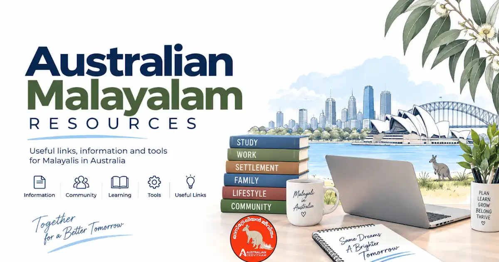
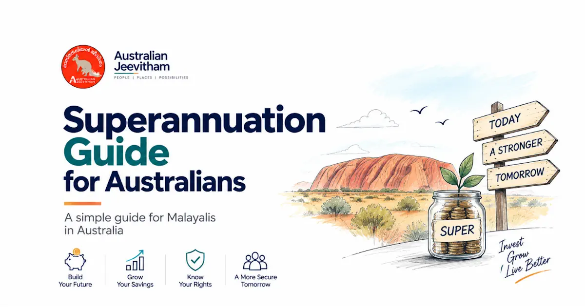

NAATI CCL മലയാളം പരീക്ഷയുടെ സമഗ്ര ഗൈഡ്NAATI CCL Malayalam Exam Guide
NAATI CCL ഒരു professional interpreter qualification അല്ല. Migration points ആവശ്യത്തിനായി community language communication കഴിവ് പരിശോധിക്കുന്ന online test ആണ്. Malayalam is available, and success can support a claim for credentialled community language points under the skilled migration points test.
By Binu Vadakkedath
Published and last updated: September 2026 · Verify current requirements with the linked official authorities
This guide is general information, not migration, legal, education, employment or financial advice. Rules, fees, occupation lists and assessment processes can change. Verify your circumstances with the official authority and use a registered migration agent or qualified professional where personal advice is required. തീരുമാനം എടുക്കുന്നതിന് മുമ്പ് official website-ലെ ഏറ്റവും പുതിയ വിവരങ്ങൾ പരിശോധിക്കുക.
1. Test format
The CCL test is delivered online. It contains two recorded dialogues, each about 300 words, divided into segments of up to about 35 words. You hear a chime, then interpret each segment between English and Malayalam.
Start interpreting promptly after the chime. The test measures whether you transfer the meaning accurately in everyday community situations, not whether you reproduce every word literally.
2. Scoring and repeats
Each dialogue is worth 45 marks, giving 90 marks in total. To pass, you need at least 63 overall and at least 29 in each dialogue. One repeat per dialogue is available without penalty; additional repeats attract penalties.
Names, dates, phone numbers, amounts, negatives എന്നിവ note ചെയ്യുക. ഒരു dialogue ശക്തമായാലും മറ്റേതിൽ minimum mark കിട്ടാതെ വന്നാൽ pass ആകില്ല.
3. Natural Malayalam is acceptable
NAATI's Malayalam language policy recognises that common English technical terms may be used naturally. Do not force an obscure Malayalam word when the community normally uses the English term, but keep the meaning clear and consistent.
Practise formal and informal registers across health, education, housing, legal, employment and government-service scenarios.
4. Preparation plan
- Use the official downloadable Malayalam practice materials.
- Practise chunked notes with symbols for people, time, money and cause.
- Record yourself and check omissions, additions and changed meaning.
- Train both directions: English to Malayalam and Malayalam to English.
- Use a stable internet connection and the equipment required by NAATI.
High-Yield Vocabulary Domains
The NAATI CCL Malayalam exam tests your ability to interpret spoken dialogue between English and Malayalam. Focus heavily on vocabulary related to:
- Healthcare (medical conditions, hospital procedures)
- Legal (court proceedings, police interviews)
- Housing (rental agreements, real estate terms)
- Immigration and Social Services
Common Errors to Avoid
Deductions often occur due to omission of details, grammatical errors in Malayalam, and failure to maintain the register (formality) of the speaker. Practice taking quick notes to capture numbers and dates accurately.
5. Results, validity and points
NAATI advises that CCL results commonly take about four to six weeks. Credentials issued from 9 August 2022 are valid for five years. Check the expiry date before relying on it for a points claim.
Home Affairs currently awards five points for a recognised credentialled community language qualification. Points rules can change, so verify the current points table when you lodge.
Official sources and current checks
ഈ ലേഖനത്തിലെ പ്രധാന വിവരങ്ങൾ പരിശോധിക്കാൻ താഴെയുള്ള official links ഉപയോഗിക്കുക. Fees, processing times, eligibility എന്നിവ മാറാം.
Frequently asked questions
Is NAATI CCL a professional interpreter qualification?
No. CCL is a migration-related community language assessment and does not certify you to work as a professional interpreter.
What score is needed to pass NAATI CCL?
You need at least 63 out of 90 overall and at least 29 out of 45 in each dialogue.
Can I repeat a segment?
Yes. One repeat per dialogue is available without penalty. Further repeats can attract penalties.
How long is the CCL credential valid?
Credentials issued from 9 August 2022 are valid for five years. Check the expiry date shown on your credential.
Skills assessments, settlement & life after PR

Malayalam Resources Hub
A comprehensive directory of guides covering jobs, visas, healthcare registration, licence conversion, superannuation, and settling into Australia.
- 11+ Guides
- Jobs & Visas
- Settlement
Renting Your First Home
Rental applications, inspections, state-specific bond rules, condition reports, and tenancy resources for new arrivals.
- Bond Rules
- Inspections
- Tenant Rights

Superannuation Guide
12% SG rate, Payday Super, EPF/PF comparison, choosing and consolidating funds, and DASP for eligible former temporary residents.
- 12% SG Rate
- EPF vs Super
- DASP